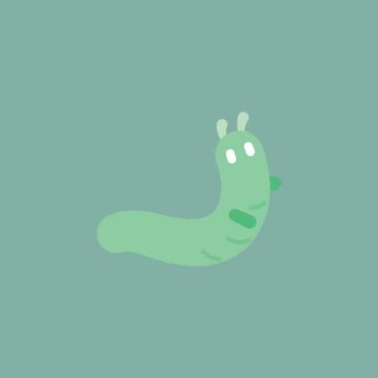

Ali Rıza KESKİN (sulincix) Packager & Developer |
Suleyman POYRAZ (zaryob) Packager & Developer |

Furkan KARCIOĞLU (frknkrc44) Tester & Developer |
|---|---|---|

Tuğrul CEYHAN (hayalet3) Tester |
Efe Arda YAVAŞ (cobalt) Designer |

Adil AYTAN (nobugger) Tester |